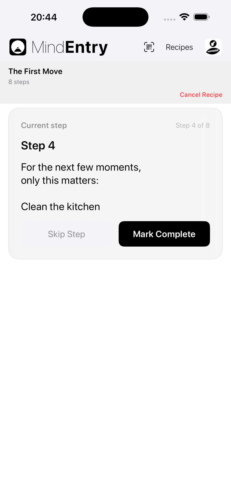
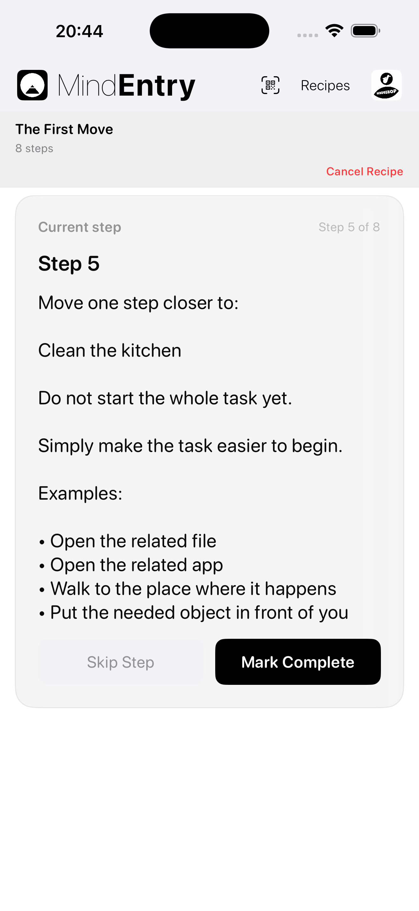
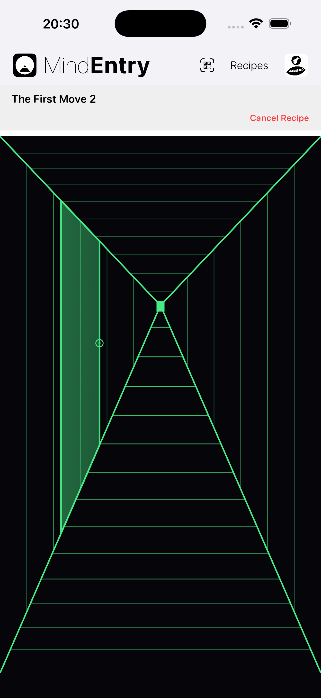
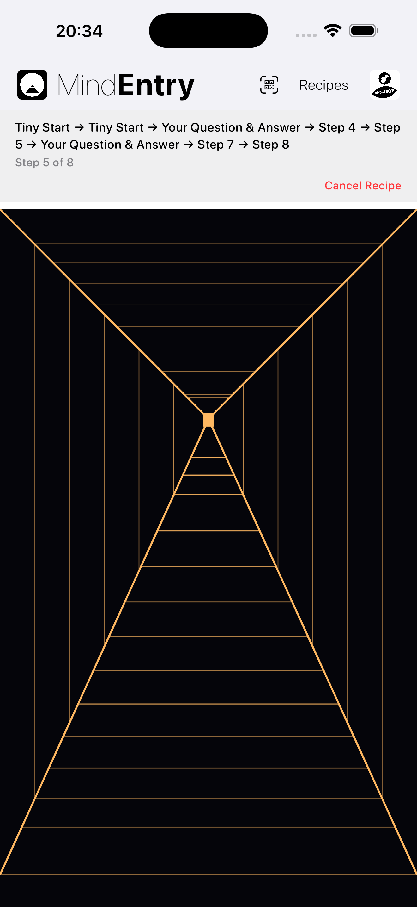

A different way to move through a recipe.
Hallway Mode is an alternative display mode for MindEntry recipes.
It does not change the recipe itself. It changes how you move through it.
Instead of moving from one step card directly to the next, Hallway Mode places a quiet space between steps.
You move forward through a hallway. After a short distance, a door appears. Opening the door takes you to the next step.
Same recipe. Different perception.
Sometimes the hardest part of a recipe is not the step itself. It is seeing the whole thing as a process.
Hallway Mode reduces that friction by keeping attention on only what comes next.
The recipe becomes something you move through, not something you stare at.
Direct, clear, and efficient.
Standard Mode presents a recipe as a sequence of steps.
It is best when you want the simplest, fastest path through a recipe.
Step → Complete → Next Step
Standard Mode is useful when the mind is ready to follow a structure directly.


A quiet space between steps.
Hallway Mode adds movement between steps.
The hallway begins with no door visible. You move forward. After a short, varying distance, a door appears. Tapping the knob opens the next step.
Step → Move Forward → Door → Next Step
The next door appears after a small number of forward moves. The distance changes from step to step, so the recipe feels less like a checklist and more like a guided passage.
You do not choose between multiple doors. You do not go backward. You do not skip ahead. The hallway simply carries you toward what is next.


The same step can feel different depending on how you reach it.
When the mind is clear, a list can feel useful.
When the mind is frozen, overwhelmed, or resistant, a list can feel like more weight.
Hallway Mode changes the question from:
How many steps are left?
to:
Where is the next door?
That small shift can reduce cognitive friction.
Instead of asking the user to manage the whole sequence, Hallway Mode gives the mind one simple action:
Move forward.
Interactive recipes can feel less like a form and more like guided movement.
Stateful Recipes can respond to what you enter or choose during the run.
In Standard Mode, that interaction can feel like a structured workflow:
Question → Answer → Next Step
In Hallway Mode, the same interaction can feel more like guided passage:
Door → Question → Move Forward → Next Door
This matters when the brain is frozen.
A frozen mind often does not need more options. It needs a smaller next move.
Hallway Mode keeps the recipe interactive without making the user hold the full structure in mind.
Most apps focus on the steps themselves.
Hallway Mode focuses on the space between them.
That space allows the previous step to end before the next one begins.
The recipe still runs in MindEntry. The steps still work the same way. The difference is how the mind arrives at each one.
Hallway Mode does not make the recipe easier by removing steps. It makes the next step easier to meet.
Copyright © 2026 MINDBEBOP — All rights reserved.